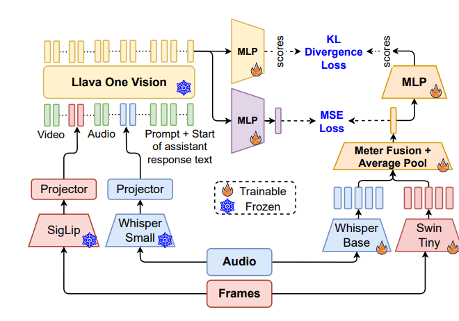

Dynamic Content Moderation in Livestreams: Combining Supervised Classification with MLLM-Boosted Similarity Matching
KDD 2026 · ADS · arXiv:2512.03553 · Preprint first submitted 2025/12/03
Abstract
Content moderation remains a critical yet challenging task for large-scale user-generated video platforms, especially in livestreaming environments where moderation must be timely, multimodal, and robust to evolving forms of unwanted content. We present a hybrid moderation framework deployed at production scale that combines supervised classification for known violations with reference-based similarity matching for novel or subtle cases. This hybrid design enables robust detection of both explicit violations and novel edge cases that evade traditional classifiers. Multimodal inputs (text, audio, visual) are processed through both pipelines, with a multimodal large language model (MLLM) distilling knowledge into each to boost accuracy while keeping inference lightweight. In production, the classification pipeline achieves 67% recall at 80% precision, and the similarity pipeline achieves 76% recall at 80% precision. Large-scale A/B tests show a 6-8% reduction in user views of unwanted livestreams}. These results demonstrate a scalable and adaptable approach to multimodal content governance, capable of addressing both explicit violations and emerging adversarial behaviors.
Overview
A production-scale hybrid framework combining supervised classification with MLLM-boosted multimodal similarity matching for evolving livestream content.

Citation
Wei Chee Yew; Hailun Xu; Sanjay Saha; Xiaotian Fan; Hiok Hian Ong; David Yuchen Wang; Kanchan Sarkar; Zhenheng Yang; Danhui Guan. (2025). Dynamic Content Moderation in Livestreams: Combining Supervised Classification with MLLM-Boosted Similarity Matching. arXiv preprint 2512.03553. https://arxiv.org/abs/2512.03553
BibTeX for the arXiv version:
@misc{dynamiccontentmoderation2025,
title = {Dynamic Content Moderation in Livestreams: Combining Supervised Classification with MLLM-Boosted Similarity Matching},
author = {Yew, Wei Chee and Xu, Hailun and Saha, Sanjay and Fan, Xiaotian and Ong, Hiok Hian and Wang, David Yuchen and Sarkar, Kanchan and Yang, Zhenheng and Guan, Danhui},
year = {2025},
url = {https://arxiv.org/abs/2512.03553},
eprint = {2512.03553},
archivePrefix = {arXiv}
}